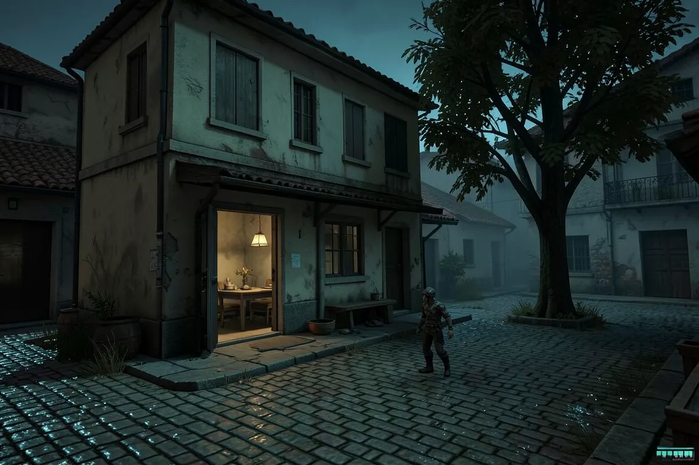

игры · 2005–2013 · также: Эпоха серого и коричневого, Суровое HD, Bloom и коричневый
Первые HD-консоли продвигают карты нормалей, bloom и HDR-свет, а арт-дирекция отвечает серым, коричневым и бирюзовым: обесцвеченные руины, тяжёлый контраст, светящиеся окна и мокрые зеркальные поверхности.

Главная идея
Реализм — это грязь и фактура: серьёзный мир серый, потёртый и мокрый, а свет расцветает из тьмы.
Принципы дизайна
Обесцвечивайте палитру до коричневых, серых и бирюзового или сепийного грейда.
Используйте карты нормалей на каждой поверхности для трещин, болтов и грязи.
Пусть яркие области светятся: окна и небо сияют за своими краями.
Делайте поверхности мокрыми и зеркальными, с резкими бликами.
Берите высокий контраст: задавленные тени и пережжённые света.
Заполняйте пространство обломками, укрытиями и руинами.